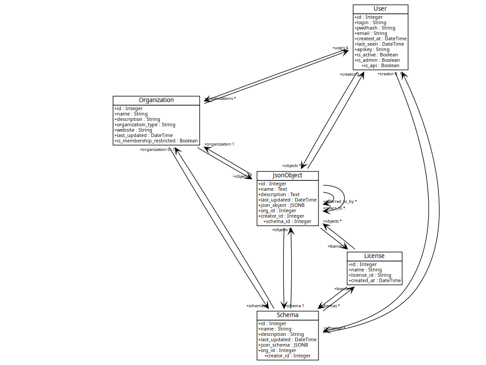

Models
Contents
Models¶
Objects involved in MOSP¶
The core concept of MOSP lies on the JSON schemas and JSON Objects. Each objects you create within MOSP will conform to a selected schema.
Schemas¶
A JSON schema describes and validates your existing data format(s). This ensures the quality of client submitted data. MOSP also uses JSON schemas for the generation of the object editor.
For example, the JSON schema available here validates the security standards used in MONARC.
Example of schemas¶
Users¶
A user can be part of one or several organization.